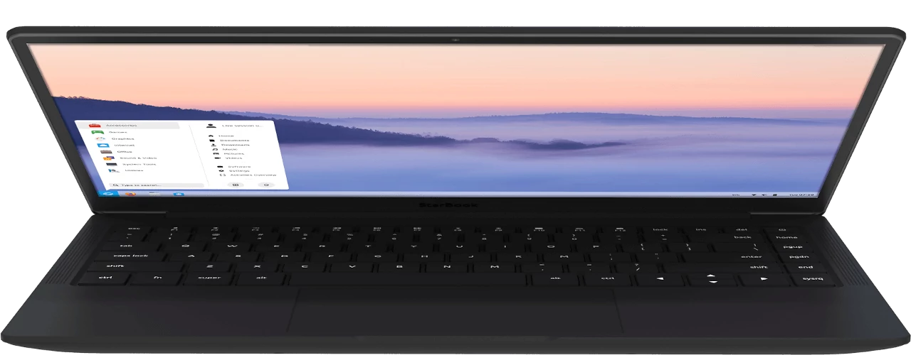

Zorin Grid
Manage Zorin OS-powered computers in your
business, school, or organization.
Leanr more
Manage Zorin OS-powered computers in your
business, school, or organization.
Leanr more
Buy laptops and desktops powered by Zorin OS.
Contribute to the project.
Leanr more 